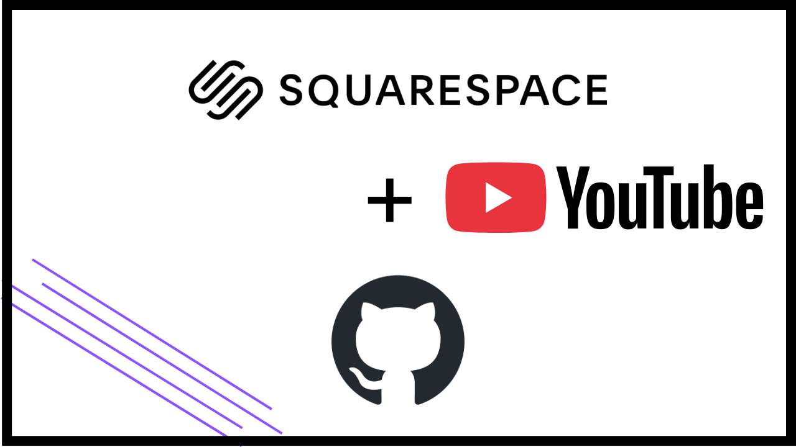
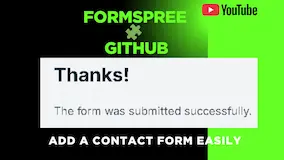

Web Development
☰
Home
About
Blog
YouTube
Contact
Web Development
Your Website Ready in a Few Minutes – Simple Steps
Start Building Your Website Now ⇩
Photo by
Luna Lovegood
on
Pexels
.
Latest Blog Posts
Add a Favicon to Your GitHub Pages Site Without Git | Step-by-Step Guide
Add a Sitemap to GitHub Pages | Improve SEO & Site Indexing
Integrate Google Search Console with GitHub Pages | Track Website Performance
Add robots.txt to GitHub Pages | Control Search Engine Crawling
Test Website Compatibility with BrowserStack | Cross-Device & Browser Testing

Steps to connect Squarespace Domain to GitHub Pages | Step-by-Step Setup
Check https status of your website using httpstatus.io | Website Debugging Made Easy

Add Formspree contact form to Github Repsitory| Add a Contact Form Easily
How to delete your Github Repository
Canva for Beginners|Designing make easy
Intro for VS Code|Design as you like